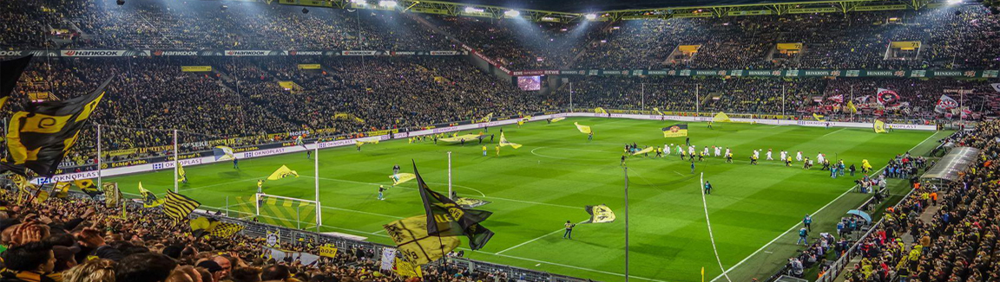

Signal Iduna Park
Signal Iduna Park: The Legendary Home of Borussia Dortmund
Signal Iduna Park, the iconic stadium of Borussia Dortmund, stands as a symbol of passion, power, and unwavering support. With its imposing structure and electrifying atmosphere, it has earned a reputation as one of the most thrilling football venues in the world.
A Monument of German Football
Signal Iduna Park, formerly known as Westfalenstadion, is the largest stadium in Germany and one of the largest in Europe. With a capacity of around 81,365 spectators, it provides an awe-inspiring setting for Borussia Dortmund's home matches.
The Yellow Wall
One of the most famous features of Signal Iduna Park is the Südtribüne, also known as the "Yellow Wall." This standing-only section behind the goal is a spectacle of passion and solidarity, with thousands of Dortmund fans clad in yellow, creating a vibrant and intimidating backdrop for every match.
Legends and Historical Triumphs
Signal Iduna Park has been witness to numerous legendary players and historic moments in Borussia Dortmund's rich history. Icons such as Jürgen Klopp, Matthias Sammer, and Robert Lewandowski have graced this hallowed ground, while the club's triumphs in domestic and international competitions continue to resonate within its walls.
An Electrifying Atmosphere
The atmosphere inside Signal Iduna Park is unparalleled. The chants, songs, and synchronized movements of the Dortmund faithful create an electric buzz that echoes throughout the stadium, energizing both players and spectators and forging an unbreakable bond between the team and its fans.
A Temple of Emotion
Signal Iduna Park is not just a stadium; it is a temple of emotion. It is a place where dreams are forged, where hope soars, and where the spirit of Dortmund's passionate supporters is ignited. It encapsulates the essence of the club and its connection to the local community.
A Destination for Football Devotees
Signal Iduna Park is a destination that beckons football enthusiasts from around the world. Whether attending a match, taking a stadium tour, or exploring the Borusseum museum, visitors can immerse themselves in the club's history and experience the enduring legacy of Borussia Dortmund.
A Testament to Borussia Dortmund
Signal Iduna Park is not merely a venue; it is a testament to the unwavering spirit of Borussia Dortmund. It is a place where footballing dreams come to life, where resilience and passion merge, and where the love for the game burns brightly in the hearts of all who enter.
- Dortmond - Germany.
- 81,365 spectators.
- The biggest Stadium Germany.